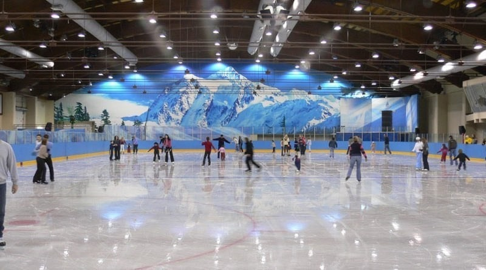

Ледовая арена "Кот на льду"
т. (812) 3-233-322
Каток "Кот на льду" приглашает всех любителей активного отдыха покататься на коньках на большой ледовой арене. Лед обновляется каждые 3 часа. Играет хорошая музыка, которая создает праздничную атмосферу.
пн-пт 09-00 до 21-00
сб-вс 09-00 до 23-00
Перерыв 15 мин на подготовку льда ежедневно в 12.00, 15.00, 18.00, 21.00.
Работает прокат коньков, профессиональная заточка коньков, гардероб и камера хранения. Для начинающих есть помощники фигуриста и средства защиты. Возможны индивидуальные занятия с опытным тренером.
Массовое катание - 50 руб./час
Занятие с тренером - 200 руб./час
Прокат коньков - 100 руб./час
Заточка коньков - от 250 руб.
Директор:
Кузнецов Семен Семенович
Администратор:
Иванов Петр Петрович
Адрес: г.Санкт-Петербург,
улица 3-я Строителей, 25
Телефон (812) 3-233-322
e-mail: snowcat@mail.ru